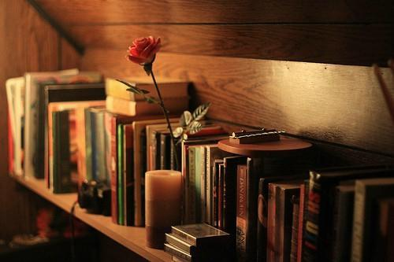
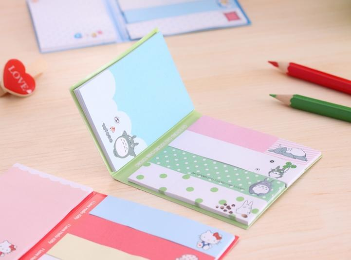

喜欢这八个字——手边有书，心中有梦。
还喜欢这十四个字——胸藏文墨怀若谷，腹有诗书气自华。
对于我来说，读书这件事已经不单单是爱好，而早就成为了习惯。我希望这些习惯能不断地滋养我的灵魂，伴我度过生命里的每一个晨昏。
世间唯有好书与爱不可辜负对吗？哦，当然，还有美食啊，哈哈。
我喜欢，享受睡前那静谧的读书时光
我迷恋夜晚，有星，有月，有独处的自在。尤其在睡前，拉上厚厚的窗帘，室内有温暖明亮的光，有时在床上，有时在飘窗上，我可以倚着舒适的靠垫，手里捧上一本书，一天中最美妙的时光便开始了。
周围有安静的空气在流淌，或者有极轻的音乐在飘荡，这样的时刻，可以看一些轻松的散文随笔，也可以重温那些读过的经典，若有一个甜甜的故事来当睡前餐，也是不错的。
我知道每个人都有自己的习惯，比如有些人喜欢睡前刷手机，有些人喜欢听有声读物，有些人喜欢看视频……这其实都没什么，只要找到自己喜欢做的事情，就拥有了一个舒服快乐的晚上。
我很享受一天里这个重要的读书时段，而这种习惯我也已经保持了很多年，如果没看点什么就睡觉了，总感觉一天仿佛没有过完。
安安静静的，只有书香陪伴，我深深地呼吸，沁人心脾。
我喜欢，永远在包里放一本纸质书
我迷恋纸质书，那种拿在手里沉甸甸的感觉，那种摸起来带着书籍特有的质感，那种翻动书页时在空气里发出的轻微摩擦声，都是我所喜爱的。
所以，除非背极小的包包，否则我的包里永远会有一本纸质书。多年的习惯下来，它的存在已经成为了我的某种安全感与踏实感。它让我在没有急事的情况下，无论等人还是等车，无论等多久，都神情淡定，不急不躁。因为我可以找个地方坐下来，从包里拿出一本书安然地阅读，不知不觉间，文字的精彩早已融化了等待的焦虑。
当然，作为纸书控，我也不是完全不接受电子阅读，但所读的多数是畅销书，经典书籍和自己喜欢的读本是一定要入手纸质书的。前不久，在微信读书上开始看毛姆的《面纱》，看了几十页，就再次为毛姆的文字所拜倒，真不愧是我最喜爱的作家之一呀。于是撇下电子阅读，赶紧买了纸质书，那米白色的麻麻的封面摸起来手感超好，瞬间感觉得到了宝贝似的，欢欣雀跃。
现在，我每天背着它走过小区的花园，走过城市的街路，走过地铁站台上拥挤的人潮，走过我随时随地的读书时光。
我喜欢，闲暇时逛逛书店与图书馆
以前我曾经抱怨自己的城市是个文化氛围不丰盈的地方，它有着分明的四季，和硬朗的气质，有着节奏不快也不慢的适宜。但总感觉缺乏那样一种格调，对，我们好想要一份书店地图。
令人稍感欣慰的是，近几年，一些书吧与特色书店相继开了起来，终于不用再只局限于北方图书城和新华书店的惯有模式了。
我可以到氧气书吧柔和的灯光下写东西，在歌德书店的古色古香里坐一个下午，在西西弗的书香里品一杯咖啡……哦，对了，至于某些集图书、咖啡和宠物于一店的场所，我也偶尔会去，不过作为猫迷，注意力都跑到猫身上了，哪还有心思看书呢，哈哈。
说起来，图书馆也是个好地方。记得博尔赫斯说，如果有天堂，那应该是图书馆的模样。
休息日，穿上简洁的衣裙，扎起马尾巴，去图书馆借书或上自习的感觉也不错。虽然已经离开校园，但在这里还会听到有人喊“同学”，有种青春回旋的美妙。
聊了这么多读书的场所，其实拥有一颗能安然与书籍相处的心尤为重要，唯有如此，这些地方对于我们来说才更有意义。
我喜欢，在重要的内容旁贴上这种小彩贴

对，就是这种小彩贴，我手边有很多，连包包里都会有一些，因为随时随地的读书，就会有无意间的发现，那些重要的内容，那些喜欢的句子旁，都可以插进一个小贴。
我个人不大习惯在书上随意写画，随便折角（不过我倒是不反感别人这么做，看到有人说把书都翻烂了，觉得好羡慕，很学霸的感觉呢），以前碰到重点或好的文字，我会随手放个书签，但有时无意拿起间书签会哗啦啦地掉出来。于是发现了这种好用的小贴。
如果你是喜欢在读书时随便写点什么的人，也可以用那种大一点的便利贴，这样就能随意记录自己的感慨或奇思妙想了。
对于一些自己特别喜欢的书，我偶尔也会写写读书笔记，但我这个人比较懒，一想起要对书本进行深度回忆，再长篇大论地写出来，我就偷懒放弃了。若你是个坚持写笔记的人，我佩服你，继续下去吧，那是个好习惯。
我喜欢，在灯下书写那些喜爱的诗词
经常看我简书的朋友会知道，我的大多数文章都跟诗词有关，是的，我是个诗词迷，尤其喜爱古诗词。
就像我一直坚持若写书单，必不会写自己没看过的书一样，我所推荐的词，首先要是自己背得出来的，而不是拿一本宋词鉴赏词典翻翻捡捡就可以。
所以，如果没有特殊情况，我每天晚上都必有半个小时是属于诗词的。灯下，铺一张花笺纸，静思片刻，再细细地默写出它们来。有时用硬笔，有时用软笔，每天有不一样的词，但每天都有一样的古典情怀。这个习惯我已坚持五年以上，反反复复，虽不能说每首词都融进了我的骨子里，但可以说某些感觉渗入了我的气质。
曾经有位简友给我发简信说，很喜欢你推荐的诗词，我把背不出来的每首都抄在笔记本上，晚上睡觉前或没事的时候背几首。
这句话对我的触动很大，也让我很开心。原来这世界的某个角落里，也有人与我做着同样的事，她在我的推荐里汲取养分，而我，要更努力才行啊。
而且，无论累了的时候，还是烦了的时候，只要坐到桌前，一字字写下那些自己喜欢的诗词，不知不觉间就体会到了放松与治愈。
我喜欢你，所以我要变得更好，而你也会让我变得更好
是啊，我喜欢你，我的好书们。每天看着你们在我的书柜里安安静静地等着我去翻阅，我就觉得无比幸福与满足，好像拥有了全世界。
所以，我要变得更好，只有变得更好才能更深刻地读懂你们。我要拿出更多时间，做阅读后的思考。对于有些东西，拥有不是最重要的，懂得才最重要。
而我也相信，浩瀚博大、丰富睿智的你，也会让我变得更好。就这样吧，一辈子，做你的书女。